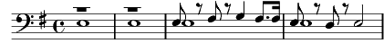

Maîtresse du soldat (la)
Mi mineur
Paroles: Charles Cros
Musique: Henri Baeriswyl

Rm, rm, la, la, la...
La maîtresse du soldat, c'est la mort
Pour qu'il lui soit infidèle
Femmes, venez !
Pour qu'il lui soit infidèle
Femmes, venez, venez !
La, la, la...
Pour qu'il lui soit infidèle
Femmes, venez, venez !
Entourez de vos bras blancs
Le drap dur qui l'habille en couleurs franches
Pour se battre
Baisez sa bouche et ses yeux
Mais en vain
Il oubliera vos caresses
Car il pense que sa maîtresse à jamais
La, la, la...
Que sa maîtresse à jamais
C'est la mort